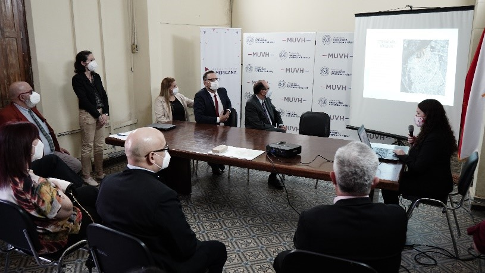

La carrera de Arquitectura entrega proyecto al MUVH
La Universidad Americana en el marco de sus actividades de Extensión Universitaria entregó el proyecto de urbanismo realizado por estudiantes de carrera de Arquitectura al Ministerio de Urbanismo Vivienda y hábitat, la propuesta es realizar mejoras dentro del plan maestro del bañado norte, en el barrio San Juan y Banco San Miguel.
Ir a